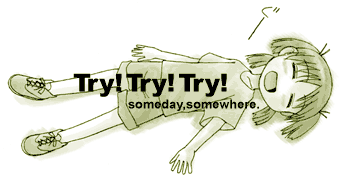

A lazy image. As she is so soundly asleep, please do not wake her.
The homepage where it was originally published, "@TRIATHLON", is no longer written here, but that's okay.
"someday, somewhere." Quite excellent words.
After all, you were finally able to meet her properly in Azumanga 2.
---------------------------------------------------------------------
Zzz...
Try! Try! Try!
someday, somewhere.
---------------------------------------------------------------------